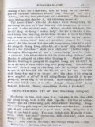

Languages
台文
｜
中文
｜
日本語
｜
English
字體
小
｜
中
｜
大
首頁
/
白話字數位典藏
白話字數位典藏全文檢索
查詢模式
選擇年代
清國時代(1885-1895)
日本時代(1895-1945)
戰後(1945-1969)
1885-1895
1896-1905
1906-1915
1916-1925
1926-1935
1936-1945
1946-1955
1956-1965
1966-1969
1970-1980
1980-1990
1990-2000
2000-2010
2010-
選擇文類
詩
散文
小說
戲劇
傳記
選擇作者
陳清忠
陳清義
編輯部
柯設偕
吳天命
明有德
偕叡廉
周天來
劉華義
王守勇
林茂生
陳添旺
王占魁
柯維思
賴仁聲
陳瓊琚
雪峰逸嵐
吳清鎰
郭水龍
蕭樂善
許水露
葉金木
陳金然
章王由
廖得
鄭連坤
潘道榮
楊士養
梁秀德
劉約翰
周淑慧
高金聲
林燕臣
黃六點
蔡愛義
許有才
主筆
巴克禮
陳鳩水
郭朝成
張基全
陳明清
陳能通
拾穗生
顏振聲
卓恆利
傳道局
胡文池
劉主安
鄭兒玉
Google Search
Yahoo Search
全部
刊名
標題
標題(教羅)
全文
全文(教羅)
作者
第2頁，共4頁(共66筆資料) 0.65803909301758sec
1
2
3
4
To Page
GO
文字列表
圖文列表
排序
日期
文類
刊名
作者
影像
[1925-7 芥菜子 文類-詩 作者-陳清忠/Tân Chheng-tiong ]
(1)
正手KAP倒手 [ CHIÀN-CHHIÚ KAP TÒ-CHHIÚ ]
正手KAP倒手 倒手呵咾正手講： 兩個相倚來ê時； 你是比我重倍gâu， 雖bóng你我是雙生。 山水景緻你會為， 請安批信做你來； 獨獨我袂做半項。 Kap你比並毋應該。 正手謙卑應伊講： 猶久一項我袂leh！ 小妹、小弟我袂抱 毋值你抱ê好勢。 養飼天國ê細囝， 就是最高ê藝術； 你io好勢ê因端， 恁厝khah倚佇心肝。 陳清忠譯...
[1925-10 芥菜子 文類-詩 作者-陳清忠/Tân Chheng-tiong ]
(1)
祈禱無停 [ KÎ-TÓ BÔ-THÊNG ]
「祈禱無停」 「著祈禱無soah」。帖撒羅尼迦（1）5:17.E.R.W Edna. R. worrell. （五線譜） 1. 祈禱無停！上帝近倚；祈禱無停！伊欲聽我；上帝應允，逐項穩當；祈禱無停！伊欲應咱。 2.祈禱無停！你所欠用；祈禱無停！伊欲贊成；你所要求，上帝歡喜；祈禱無停！伊欲予你。 3.祈禱無停！犯罪ê時；祈禱無停！用好贏--伊；耶穌原本，也捌受試；祈禱無停！伊欲牽你。 4.祈禱無停！傷悲ê時。祈禱無停！伊tháu放你；艱苦袂會瞞過上帝；祈禱無停！伊創好勢。 5.祈禱無停！信仰khah深；祈禱無停！也著專心；深信消滅所有煩惱；祈禱...
[1925-10 芥菜子 文類-散文 作者-陳清忠/Tân Chheng-tiong ]
(3)
論死人KOH活 [ LŪN SÍ-LÂNG KOH-OAH2 ]
論死人KOH活 耶穌予死人koh活，佇福音書中有記3擺： 1. 予管會堂ê人Gâi-ló͘ ê查某囝koh活。馬太9： 2. 佇拿因予守寡婦人人ê囝koh活。路加7： 3. 予拉撒路koh活。約翰11： Gâi-ló͘ ê查某囝死了後無偌久，耶穌予伊koh活。 守寡婦人人ê囝死，經過一問日（按：應為一兩日），teh欲扛去埋葬，佇路中耶穌予伊koh活。 拉撒路已經死4日久，身屍已經發臭味，耶穌佇墓前叫一聲，隨時koh活對墓裡...
[1925-10 芥菜子 文類-散文 作者-陳清忠/Tân Chheng-tiong ]
(2)
袂得赦ê罪 [ BOĒ TIT SIÀ Ê CHOĒ ]
袂得赦Ê罪 「見若講話攻擊人子ê，欲赦免伊；獨獨見若講話攻擊聖神ê，不論今世來世無欲赦免伊。」馬太12章32節。這節所講是teh指啥物款ê罪，也著怎樣來解說？咱大家若患著這款永死永滅ê罪過，萬事盡休，的確會得thang閃避絕望kap悲感。所以這句咱袂免得著斟酌來研究，靜靜來深想；因為是真要緊ê問題。咱有信對佇反悔kap信仰會得著罪赦，也有信或是佇今世á是無論佇來世有這款永袂赦ê罪－咱真驚－彼个罪就是謗瀆聖神ê罪。今仔日佇咱ê中間有濟濟ê基督徒，信in若使領受洗禮就會得...
[1925-10 芥菜子 文類-散文 作者-陳清忠/Tân Chheng-tiong ]
(4)
湯匙Ê時代 [ THNG-SÎ Ê SÎ-TĀI ]
湯匙Ê時代 佇正月時為著食siuⁿ濟會害嘴齒ê物，致到嘴齒疼。父母teh欲chhōa in ê囝兒去找齒科醫ê時的確袂免得無想，也奇怪講：遐个無文明ê野蠻人，怎樣袂予嘴齒疼來苦楚in。野蠻ê人無倚靠刀仔á是別項物，in會食真碇ê肉－這實在是為難ê事－。人講按呢反轉予in ê嘴齒不時勇健。刀仔以及別款ê器具，á是料理術，強強teh欲予人變做無嘴齒ê動物。真濟款ê嘴齒病，野蠻ê人kap in攏毋相識；獨獨文明&...
[1925-10 芥菜子 文類-小說 作者-陳清忠/Tân Chheng-tiong ]
(5)
聖誕歌(續接前號) [ SÈNG-TÀN-KOA (Soà-chiap chêng-hō) ]
聖誕歌（續接前號） Kian-līn入去了，就出力關門；門phiāng倚ê聲親像雷嘽，無論厝內所有ê物件，或是地下室酒場裡所chàn-teh ê水桶，to攏應奇怪ê聲。若是Kian-līn原來毋是會予怪聲來拍驚著ê人。門關了後，經過通巷，爬上樓頂，ná爬樓梯，ná修整蠟燭ê心。 雖bóng四面暗so-so，Kian-līn攏無躊躇。暗，是伊所愛，因為毋免開錢來買蠟燭。總是Kian-līn猶未關彼个siāng重ê門，事先伊有去巡四界。看厝內有變款...
[1925-10 芥菜子 文類-散文 作者-陳清忠/Tân Chheng-tiong ]
(2)
死神 [ SÍ SÎN ]
死神 下面所記ê，就是英國ê大詩人Geoffray Chaucer (1340-1400)所寫ê詩〈The Canterbury Tales〉ê中間ê一个故事。佇Canterbury ê所在有這个神社叫做St. Thomas，常常有濟濟巡禮ê人去遐參拜。大家佇路中相kap行，無聊，就相替講故事來安慰女眾。這个故事猶原是遐个巡禮者中ê一個所講--ê。 讀這个故事，ǹg望咱會得著多少ê教示。有三個少年人，一暗坐佇酒店teh博賭，聽見有鐘ê聲，就伸in &e...

[1926-1 芥菜子 文類-小說 作者-陳清忠/Tân Chheng-tiong ]
(4)
聖誕歌 [ SÈNG-TÀN-KOA ]
聖誕歌 （第三回。續接前號） 時鐘tú tân一點的時，忽然有大光照入房間，第一的神就入--來。伊的面是親像囡仔；頭毛白親像老人。身軀穿白長衫，衫á裾滾玫瑰花。手裡有giâ青翠的 「to-lô葉(holly聖誕的時用的植物的名)大光鑿著Kian-līn的目睭，就tah-hiahN精神，著一驚，就問 講：「你啥人？」 神。我就是過了(早前)聖誕的神。 Kian-līn。過了真久--ê是毋？ 神。你的過了lah！我來是為著你一生的安寧。起來佮我相佮行！ Kian-lîn。外面真寒－我穿薄薄－閣再我有感著－ 神。是為著欲救你。著聽！ Kian-līn。好lah！我欲去...
[1926-9 芥菜子 文類-散文 作者-陳清忠/Tân Chheng-tiong ]
(3)
受窘逐的人 [ Siū khún-tio̍k ê lâng ]
受窘逐的人 「為著義捌受窘逐的人有福氣，因為天國是in 的。為著我，人才詈罵恁，窘逐恁，譭謗恁萬項的歹，恁就有福氣。著歡喜快樂，因為恁佇天裡的報賞是大；因為恁以前的先知人，人也按呢窘逐in。」天國的承繼者，咱的主有代先舉「心內sòng-hiong 的人。」後來有舉 「為著伊的名受窘逐的人。」這句「為著義......」毋是屬佇世上的義理，抑是法利賽的人所teh講彼款的義，是為著基督的義的意思。 為著義，為著信仰來受窘逐的時，人不得已著去chhē神，心肝就成sòng-hiong，天國就做彼个人的所有，這是當然的事。設使若倒反，為著義，為著信仰來大大受頌讚，閣再得著物質tek報酬；就袂記得...
[1926-9 芥菜子 文類-散文 作者-陳清忠/Tân Chheng-tiong ]
(2)
本身 [ Pún- sin ]
本身 咱袂得通信用本身傷過頭，因為咱較常有欠缺濟濟的美德，閣再無十分知識家己的因端。 咱的知識本身是到極小可，尚且對佇咱的貧惰隨時失落袂記得。 咱常常，猶原毋知咱家己心內的青盲到偌傷重。 咱時常做歹家己來赦免。咱有時對佇感情來振動，也想做是熱心。 咱嫌別人佇小可的事，家己的大事放予伊過去。 咱對別人受著的苦痛隨時感著，也想是傷重；總是予人的艱苦攏放做袂要緊。 咱所做的事業欲照起工閣斟酌來想，但是判斷別人的事業攏袂出--得。 叫做真實的基督徒--的，猶未想別人的代先，是較愛省察家己。 Kut力閣gâu省察本身的人，快快會守恬靜關係佇別人的行為。 若毋是會守沉默佇...
[1926-9 芥菜子 文類-散文 作者-陳清忠/Tân Chheng-tiong ]
(2)
名人的祈禱 [ Bêng-jîn ê kî-tó ]
名人的祈禱 (IV) J.Norden (1548－1625) 善良的爸ah，我逐日求揣你，你逐日顯現佇我；我若求你，無論佇啥物時，我會看著你，－無論佇家內，無論佇野外，佇神殿抑是佇街路是按呢。我無論欲做啥物，你佮我saⁿ-kap佇teh；無論佇lim食的時，giâ筆抑是做工的時，騎馬抑是讀冊的時，默想抑是祈禱的時，你不時佮我saⁿ-kap佇teh，我無論佇啥物所在，做啥物事，我時常感著你的恩愛。我若受壓迫的時，你替我持防；人若怨恨我，你保護我；我若腹肚枵，你養飼我；我所祈願的，無論啥物，你賞賜我。Ah，求你永遠賞賜這个恩愛予我，通予通世間的人來知識你所保護我的氣力，你的恩...
[1926-9 芥菜子 文類-小說 作者-陳清忠/Tân Chheng-tiong ]
(2)
一滴一滴的水 [ Chi̍t tih chi̍t tih ê chuí ]
「一滴一滴的水」 (紲接第 5號)。 (16) 猴母佮猴囝。 一隻猴母有生兩隻囝，其中一隻，猴母有特別較疼；chhun 的彼隻，差不多攏無要緊的款。有一日知有一隻狗 teh jip in，猴母隨時就抱彼隻所疼--的，起跤就走。總是為著大驚目睭煙暈，紲將伊的囝的頭殼hám對樹khok落去，頭碗紲cheng破。也彼隻無要緊--的，擒佇猴母的 ka-chiah-phiaⁿ，得著安全逃走。 教示：受寵愛的，常常拄著不運。 (17) 當鳥的人佮雲雀 一隻雲雀kiⁿ著網，直直對當鳥的人求tháu-phàng，講，「我有做啥物毋著，著受死ah？Put-pò是為著止...
[1926-10 芥菜子 文類-散文 作者-陳清忠/Tân Chheng-tiong ]
(3)
抵抗誘惑 [ Tí-khòng iú-he̍k ]
抵抗誘惑 咱人活佇這地上的中間，咱袂免得無試煉佮誘惑。 照約伯記內面所記，「人佇地上的生活酒惑的生活。」 所以逐人應該著警戒佇伊的誘惑，謹慎來祈禱，免得魔鬼利用機會來欺騙--伊；因為魔鬼無暝無日，四界揣所欲吞咬的人。 無人遐完全，遐神聖，通免受誘惑，免受魔鬼的攻擊。 雖然誘惑oh抵抗，尚且是悲慘，iáu-kú伊的利益是真大；因為人對誘惑會成謙遜，成清氣，閣再會得受訓練。 濟濟聖徒經過濟濟的試煉佮誘惑，來得著濟濟的利益。 袂堪得受誘惑的人，teh欲跋落佇自暴自棄的陷坑。 世間無有一所在夠額神聖通閃避誘惑佮逆境的襲擊，嘛無彼款的 ún-ka通bih。 有活命的中間無一人免受誘惑...
[1926-11 芥菜子 文類-散文 作者-陳清忠/Tân Chheng-tiong ]
(4)
聽候主閣來 [ Thèng-hāu Chú koh lâi ]
聽候主閣來。 基督教信仰的基礎是真單純，親像囡仔款，若將教理抑是神學上的裝飾共伊提開，就按呢提出佇理智抑是常識的面前來看，實在是親像一款的神話，抑是一款的故事而已。 佮上帝saⁿ-kap佇teh，尚且有份佇創造萬有的耶穌，來化做人，來成人的聖，人的肉；伊做一个平常的人，行佇湖邊，食麵包；後來流血，死了三日復活，四十日就上天；後來欲閣來。信者忍受萬項的艱苦，teh向望伊閣來；所以世間的學者，有智識的人teh袂了解，算是無奇怪的事。 若是將基督的昇天佮再臨，想做是kan-ta 的形容，抑是夢想；教會隨時失力，信者就tuh-bîn，佇遐就加添地上佮肉體的向望。 若是將這个信做親像加利利討海...
[1926-11 芥菜子 文類-散文 作者-陳清忠/Tân Chheng-tiong ]
(2)
人生的五不足 [ Jîn-seng ê Ngó͘-put-chiok ]
人生的五不足 古早有一个學者叫做皆川淇園，伊有按呢講：－ 1、 「衣服。」啥物因端人著穿衫？是因為欲持防寒熱的緣故。若是按呢予身軀袂寒，予身軀袂熱彼款素素的衫，人應該著滿足才著。愛穿媠的衫是因為寒熱猶未入身軀的證據。寒熱若入身軀，就thǹg pak-theh 抑是捲草蓆也無嫌。 2、 「食物。」人怎樣著食？是因為欲充滿空腹的緣故。若是按呢毋免山珍海味著會做得才著。Teh講，－ 「無好mih-phè，食袂落」 的中間，通知伊的腹肚猶未枵。實在腹肚若枵，就米糠嘛無嫌。 3、 「家屋。」人怎樣著起厝？是因為愛預防雨露的緣故。若是按呢，高廈大閣毋免徛會做得。為著火災-害來失落厝的時，就...
[1926-12 芥菜子 文類-散文 作者-陳清忠/Tân Chheng-tiong ]
(4)
世界教化的使命 [ Sè-kài kàu-hoà ê sú-bēng ]
世界教化的使命。 若讀馬太二十八章最後的記事，就通看著復活的主佇加利利湖邊的一个小山頂，親身出現予伊的學生看，紲將世界教化的大命予--in。 耶穌傳命令的山，無tú-tú知是啥物山，kiám-chhái是san-siōng說教的山；保羅佇哥林多前書第十五章六節所講「閣一擺出現予五百外的兄弟siâng-時看見」，無定著是siâng這个時。 抹大拉的馬利亞佮別的馬利亞佇墓前看見主的時，主講，「莫得驚，」去報我的兄弟，kah in去加利利，佇遐欲看見我。」kiám-chhái佇加利利，有比驢太較濟共鳴者佇teh 的因端。除去猶太以外十一个學生攏轉去佇遐見主。 有人講主的復活，毋是一般客觀的...
[1926-12 芥菜子 文類-散文 作者-陳清忠/Tân Chheng-tiong ]
(3)
閣活的力 [ Koh-oa̍h ê la̍t ]
閣活的力 保羅有看見主，主有顯現伊本身予保羅看見。伊的先輩，溫厚的君主巴拿巴有紹介這个迫害者，loān-bō͘ 的人Tāi-sò͘的掃羅，現時叫做保羅，予眾使徒，講伊佇路中有看見主，也主有佮伊講話。(使徒 9：27) 閣活的力的大，伊的強，若愛知，請看伊受召了後的一世人！這个力就是予對敵變做同僚，予怨恨變做疼的力lah！這个力就是予獅變做牛，予豺狼變做羊仔囝的力！ 若無閣活就無保羅，無保羅就無今旦日的異邦的教會；使徒行傳以下，新約的大部分也是無！！ 主的閣活，予萬人化做靈的閣活。肉體的閣活成做思想的閣活。－冷淡感情的閣活，化做強的意志的閣活。 I、閣活的力，予人信耶穌是上帝...
[1927-1 芥菜子 文類-散文 作者-陳清忠/Tân Chheng-tiong ]
(2)
死！ [ Sí ! ]
死！ 人應該著死！ 早前出世的人有拄著死的款式，現時teh活的人也著經過彼條死河；後來閣出世的人也是親像為著死來出世一樣。 人生有死，宛然是親像太陽有落山。對東爿上出來的日頭定著一擺著對西爿落--去。人對出世了後，就隨時有死的運命來交纏。人會得通閃避sàn-hiong 的艱苦，lîn-iū 的歹款待；總是袂得通脫離死的手頭。死是人生不能免得，遐確實的事，iáu-kú人無teh想死的事，實在真奇怪。人人宛然 teh想欲活到永遠來經過這世間的款式。若看見序大人的墓，拄著囝兒的大病，朋友葬式的時，彼時就會想出家己的運命；總是若過了就隨時袂記得。 死毋但是佇人生做確實的事實，尚且是最壓制的最有...
[1927-1 芥菜子 文類-散文 作者-陳清忠/Tân Chheng-tiong ]
(4)
十字架的路 [ Si̍p-jī-kè ê Lō͘ ]
十字架的路 十字架的死，贖罪的血，任你按怎想，佇這个以外無有真的宗教。基督教的根底是血，是犧牲的死lah！上帝的囝為著咱死，咱猶原著為著伊佮伊所疼的靈魂來死！ 希臘式的生活，今旦日所叫做文化的生活袂得通飽足的因端，是因為無死lah！In 的生活，的眼目就是秋天的花，秋天的日，情的滿足，肉的（jio̍k-tek）快樂。佇啥物所在有犧牲的死，對信的服從ah！In kan-ta求爽快來活，無愛死了來得著活。In無了解犧牲生活的尊貴，也無了解伊的氣力的大。 雖然講死，iáu-kú毋是自然tek 的死。佇上帝的bīn-bêng，為著上帝來thâi死家己的心肝，釘家己的意志佇十字架，撲殺(phok-...
[1927-1 芥菜子 文類-散文 作者-陳清忠/Tân Chheng-tiong ]
(2)
信仰的問答--論活基督 [ Sìn-gióng ê Būn-tap--Lūn oa̍h Ki-tok ]
信仰的問答--論活基督 A、先生，你teh 講活基督，彼到底是啥物意思。請指教。 B、活基督就是佇2000年前予人thâi死彼个基督現時猶活，無變換teh活動的意思。 A、基督敢毋是已經予人釘佇十字架死mah，是閣還魂對墓裡出來mah？ B、毋是，毋是按呢，還魂來活的，會閣照舊來死；總是基督是真實死也真實閣活；無變換伊生前的聲音抑是形狀，iáu-kú伊會得自由出入佇關密的門。 A、彼敢毋是基督的陰魂mah？ B、基督的學生起頭嘛是拍算是伊的陰魂，總是基督問in看有啥物通食--無，的時，in予伊一尾魚，伊隨時佇 in 的面前來食；閣再共 in講伊毋是陰魂，陰魂無跤手，伊報in看伊的跤...
第2頁，共4頁(共66筆資料)
1
2
3
4
To Page
GO
數位典藏國家型科技計劃
拓展台灣數位典藏計畫
版權所有 國立台灣師範大學 台灣文化及語言文學研究所©2008
10610 台北市和平東路一段162號│TEL 02-7734-5516│Fax 02-2358-2461
計劃簡介
典藏特色
執行架構
計畫典藏數位化流程
成員介紹
台灣白話字發展簡介
巴克禮牧師與《台灣教會公報》
廈門話字典-杜嘉德
白話字教學-打馬字
中國南方白話字發展
台灣基督教長老教會簡表
台灣基督教長老教會教會歷史委員會
《北部台灣基督長老教會教會ê歷史》
關於陳清忠
白話字文學：台灣文學的早春